celaeno-szafir-granatowy (prototyp)bez oceny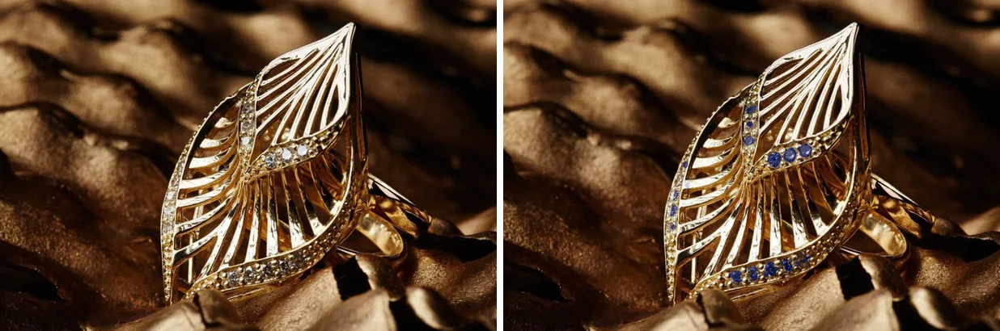
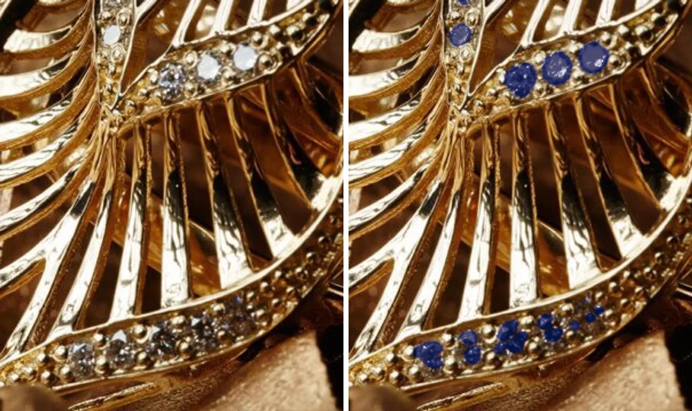
Zapisz mi nazwy, które przyjmujesz, np. iole-szmaragd-stonowany:w6. Każda karta to jedna próba:
zbliżenie oryginału obok wyniku, pod spodem cała kompozycja, na dole ocena Terry. Karty z przerywaną ramką to wersje po łagodnej
poprawce koloru zrobione lokalnie – Terra ich nie oceniała.
2026-11-11 · obrazów: 29 · kandydatów: 58 (w tym lokalnych poprawek: 15) · obrazy bez kandydata: 7.
Przyjęcie: npm run warianty:wizualizacje -- --przyjmij <nazwa>[,<nazwa>…]
Drobne diamenty pavé przemalowane w Lab (odcień i nasycenie ze wzorców szafiru granatowego, jasność L' = 5 + 0.32·L, najjaśniejsze błyski zostają jaśniejsze). Maska: kamienie bezbarwne w czterech pasach wzdłuż rzędów, złoto wykluczone. To podgląd do oceny metody – nie do przyjęcia.
celaeno-szafir-granatowy (prototyp)bez oceny

maskaczerwone = przemalowane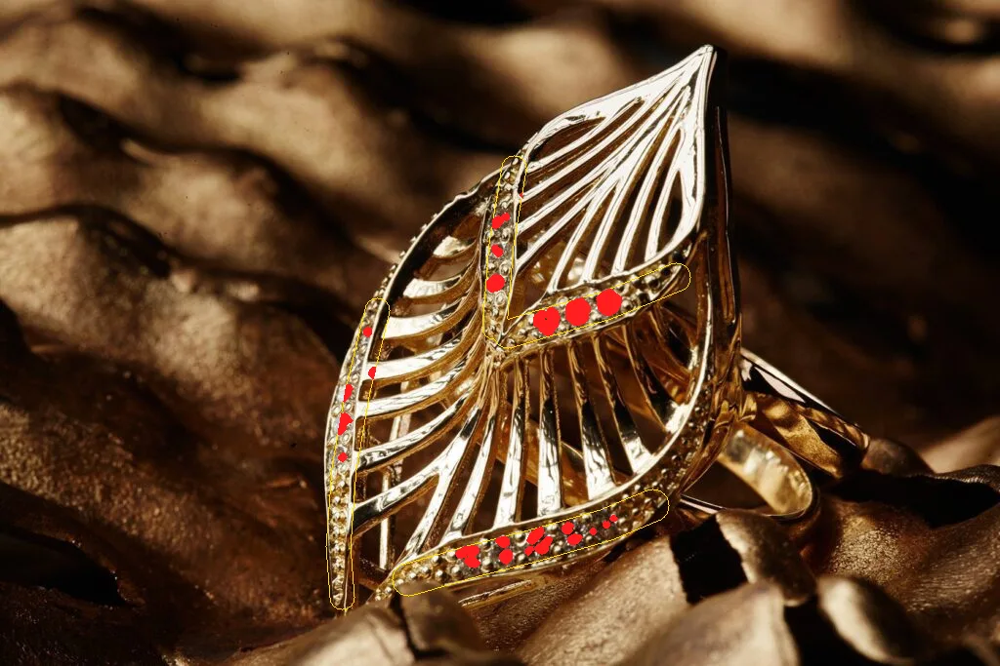
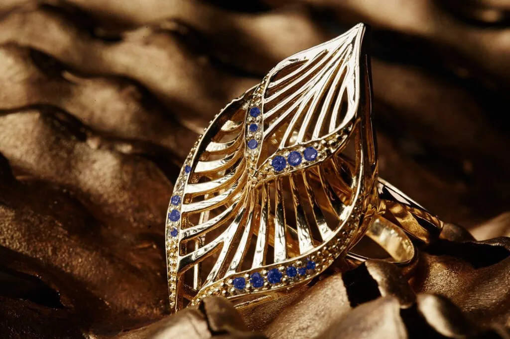
delos-szmaragd-stonowany:w5score 68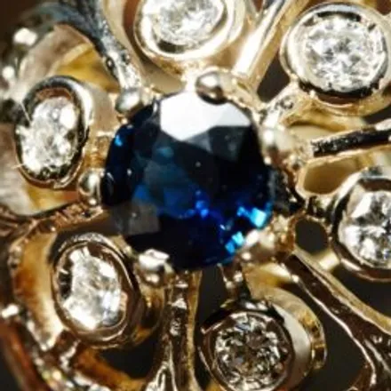
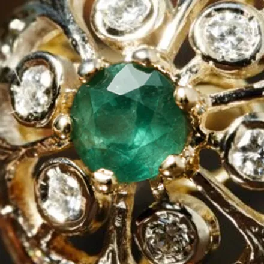
Obrys, rozmiar i położenie kamienia odpowiadają oryginałowi, a łapki pozostają widoczne. Nie widać wyraźnej poświaty ani pozostałości niebieskiego koloru na krawędzi. Jednak zbyt intensywna miejscami zieleń oraz rozmyte fasety i plamista faktura osłabiają wiarygodność szmaragdu.
delos-szmaragd-stonowany:w5-lagodnabez oceny

Wersja próby w5 po łagodnej poprawce koloru przy krawędzi (lokalnie, Terra jej nie oceniała). Zarzut źródła: zarzut koloru: „Jednak zbyt intensywna miejscami zieleń oraz rozmyte fasety i plamista faktura osłabiają wiarygodność szmaragdu.”
delos-szmaragd-stonowany:w6score 62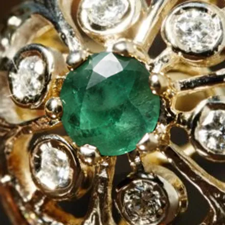
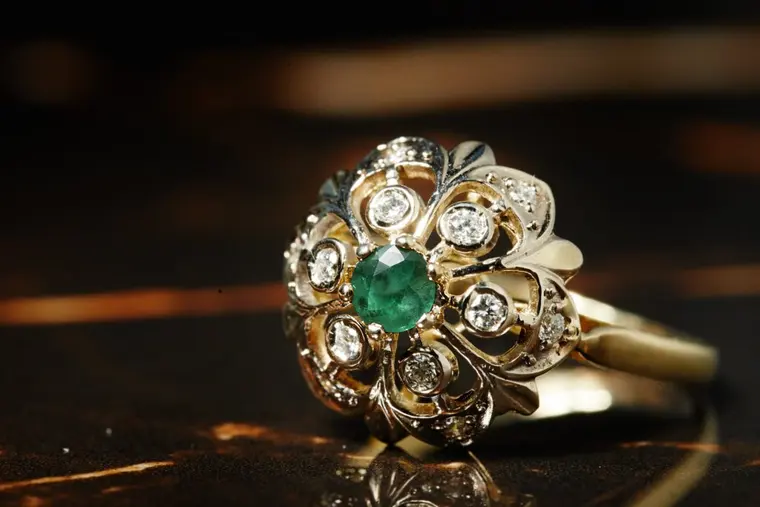
Pierścionek i otoczenie pozostają zachowane, jednak kamień wygląda na wklejony: jego obrys i czytelność szlifu odbiegają od oryginału, a styk z oprawą jest zbyt ostry. Zieleń jest mniej subtelna od zamierzonej.
delos-szmaragd-stonowany-2:w5score 72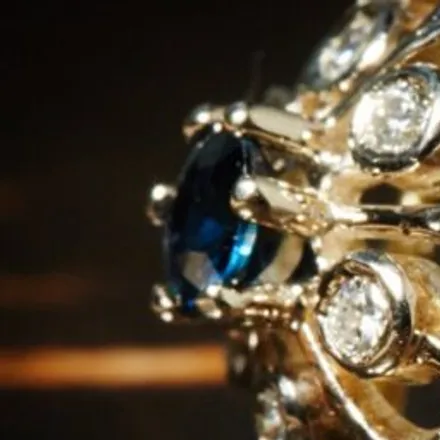
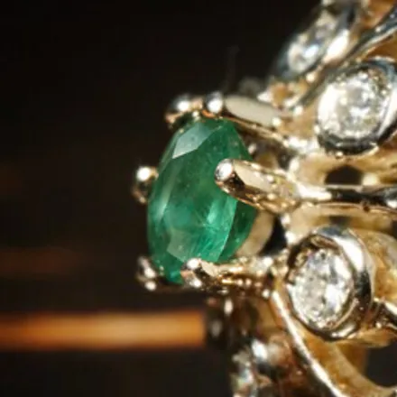
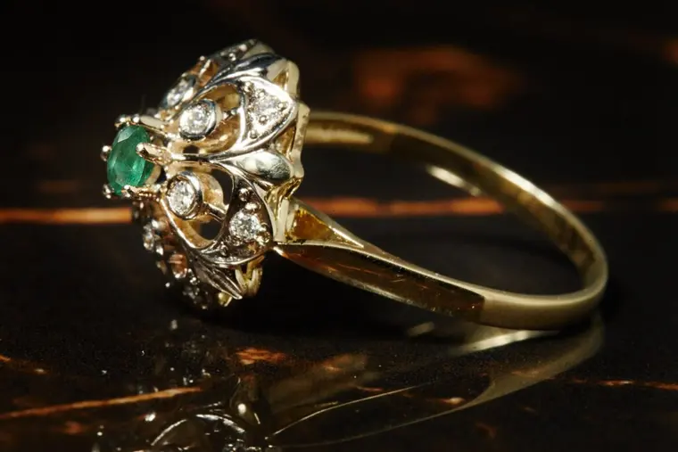
Obrys, rozmiar i położenie kamienia oraz widoczne łapki są zasadniczo zachowane. Sam kamień wymaga jednak spokojniejszej barwy i bardziej przekonującej struktury: miejscami przypomina zielone szkło, a fasety i krawędź są zbyt miękkie. W obecnej postaci jego wiarygodność jest niewystarczająca nawet dla wizualizacji.
delos-szmaragd-stonowany-2:w5-lagodnabez oceny

Wersja próby w5 po łagodnej poprawce koloru przy krawędzi (lokalnie, Terra jej nie oceniała). Zarzut źródła: zarzut koloru: „Sam kamień wymaga jednak spokojniejszej barwy i bardziej przekonującej struktury: miejscami przypomina zielone szkło, a fasety i krawędź są zbyt miękkie.”
delos-szmaragd-stonowany-2:w6score 65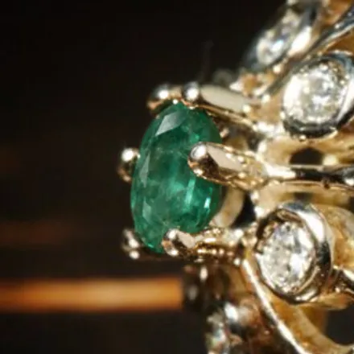
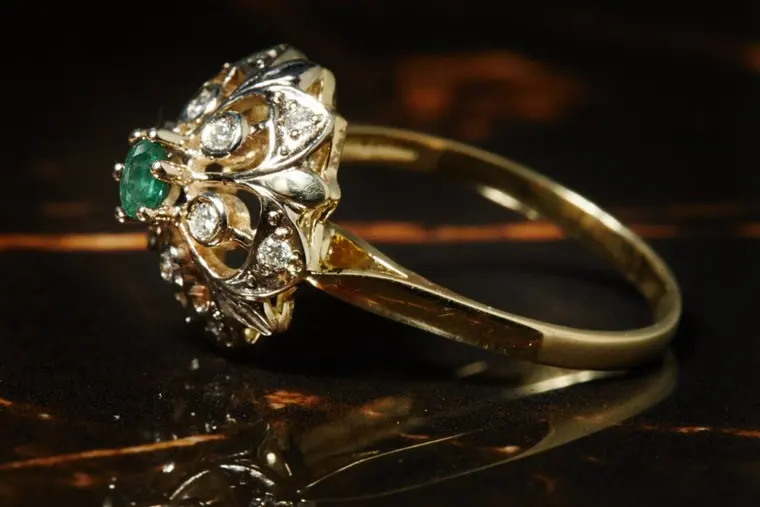
Obrys, rozmiar i położenie kamienia są zbliżone do oryginału, a łapki pozostają widoczne. Jednak rozmyta struktura faset i zbyt intensywna miejscami zieleń osłabiają wiarygodność kamienia jako naturalnego szmaragdu.
merope-szafir-granatowy-2:w2-p6score 82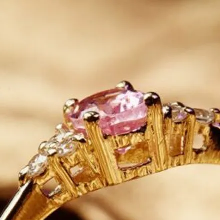
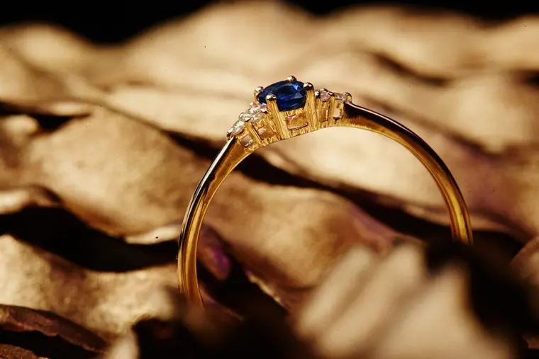
Obrys, rozmiar, położenie i typ szlifu wyglądają na zachowane, a łapki pozostają widoczne. Granatowy kolor jest bliski założeniu, jednak różowy fragment przy styku kamienia z oprawą osłabia wiarygodność retuszu.
merope-szafir-granatowy-2:w2score 76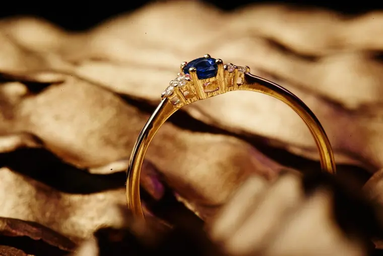
Kształt, rozmiar i położenie kamienia są zbliżone do oryginału, a łapki pozostają widoczne. Kolor odpowiada założeniu, lecz różowy fragment przy styku z lewą łapką i twarda dolna krawędź osłabiają wiarygodność retuszu.
merope-szafir-granatowy-2:w2-lagodnabez oceny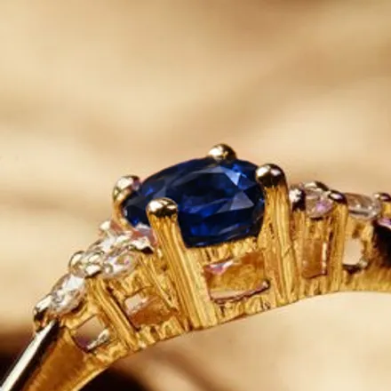
Wersja próby w2 po łagodnej poprawce koloru przy krawędzi (lokalnie, Terra jej nie oceniała). Zarzut źródła: zarzut koloru: „Kolor odpowiada założeniu, lecz różowy fragment przy styku z lewą łapką i twarda dolna krawędź osłabiają wiarygodność retuszu.”
merope-szmaragd-stonowany:w3score 78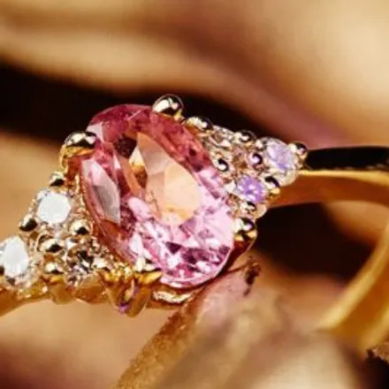
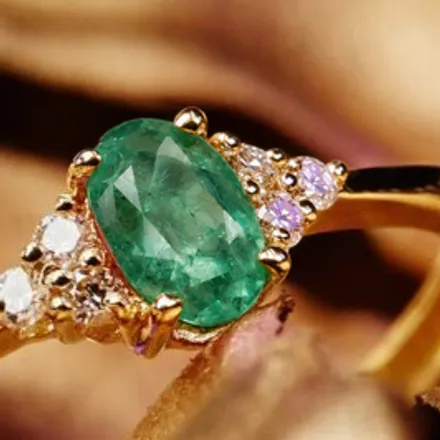
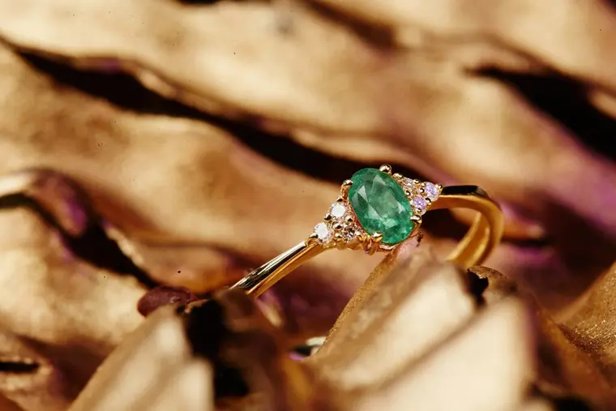
Owalny szlif, obrys i położenie kamienia są zachowane, a łapki pozostają widoczne. Zieleń jest wiarygodna, ale różowo-czerwony ślad przy krawędzi osłabia realizm retuszu i wymaga poprawy.
merope-szmaragd-stonowany:w3-lagodnabez ocenyWersja próby w3 po łagodnej poprawce koloru przy krawędzi (lokalnie, Terra jej nie oceniała). Zarzut źródła: zarzut koloru: „Zieleń jest wiarygodna, ale różowo-czerwony ślad przy krawędzi osłabia realizm retuszu i wymaga poprawy.”
merope-szmaragd-stonowany:w1score 76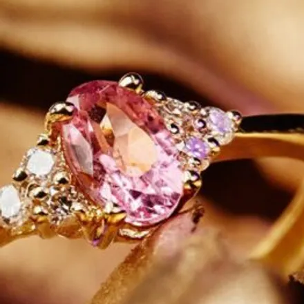
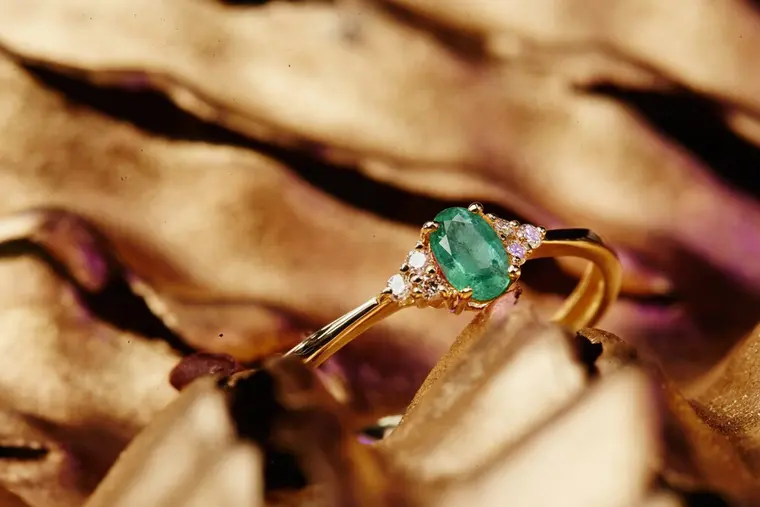
Pierścionek, obrys i owalny szlif kamienia zostały zachowane, a kolor jest bliski założeniu. Widoczna różowoczerwona krawędź przy oprawie osłabia jednak wiarygodność retuszu na stronie.
merope-szmaragd-stonowany:w1-lagodnabez oceny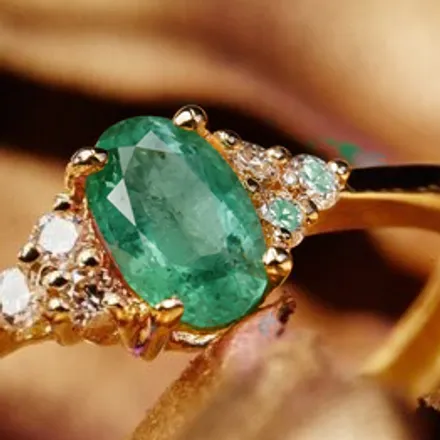
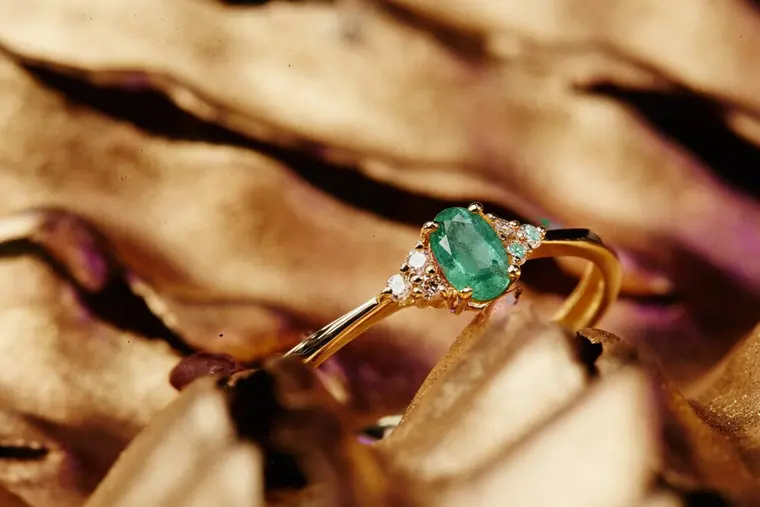
Wersja próby w1 po łagodnej poprawce koloru przy krawędzi (lokalnie, Terra jej nie oceniała). Zarzut źródła: zarzut koloru: „Widoczna różowoczerwona krawędź przy oprawie osłabia jednak wiarygodność retuszu na stronie.”
merope-szmaragd-stonowany-2:w2-p6score 72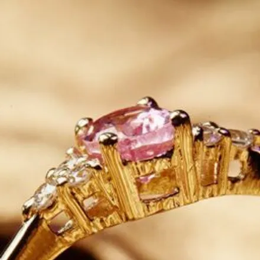
Obrys, rozmiar i położenie kamienia oraz widoczne łapki są zachowane, ale barwa i wykończenie kamienia nie są jeszcze dostatecznie wiarygodne dla wymaganej spokojnej wizualizacji szmaragdu. Różowy fragment przy krawędzi dodatkowo osłabia efekt.
merope-szmaragd-stonowany-2:w2score 68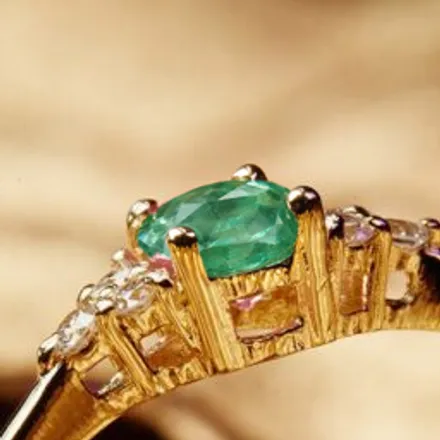
Obrys, położenie i owalny szlif kamienia są zasadniczo zachowane, a łapki pozostają widoczne. Różowa smuga przy krawędzi oraz zbyt płaski, mało naturalny wygląd zielonego kamienia obniżają jednak wiarygodność wizualizacji.
merope-szmaragd-stonowany-2:w2-lagodnabez oceny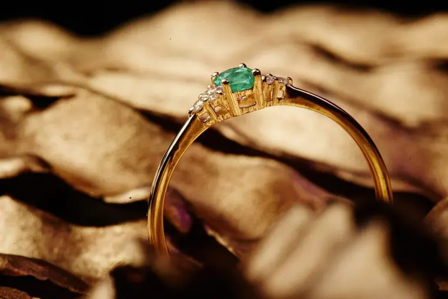
Wersja próby w2 po łagodnej poprawce koloru przy krawędzi (lokalnie, Terra jej nie oceniała). Zarzut źródła: zarzut koloru: „Różowa smuga przy krawędzi oraz zbyt płaski, mało naturalny wygląd zielonego kamienia obniżają jednak wiarygodność wizualizacji.”
phoebe-szafir-granatowy:w2score 72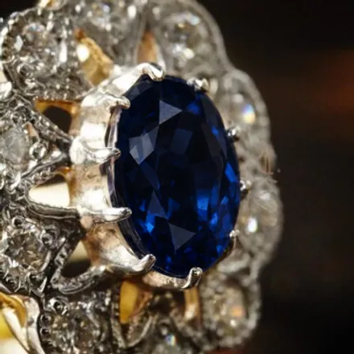
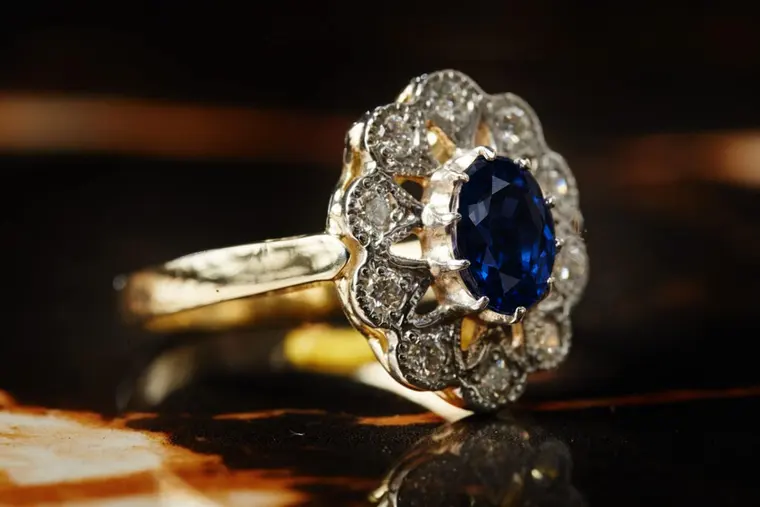
Obrys, wielkość i owalny szlif kamienia są zachowane, podobnie jak widoczne łapki. Granatowy kolor jest bliski celowi, lecz fioletowoniebieski brzeg i mało naturalne przejścia między częścią faset osłabiają wiarygodność wizualizacji.
phoebe-szafir-granatowy:w2-lagodnabez oceny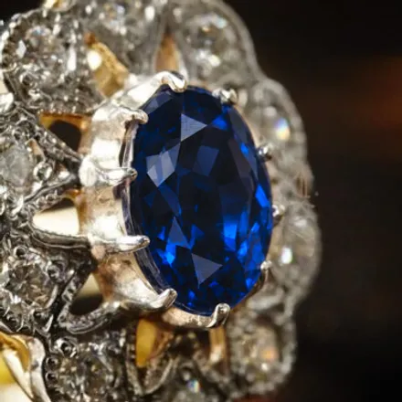
Wersja próby w2 po łagodnej poprawce koloru przy krawędzi (lokalnie, Terra jej nie oceniała). Zarzut źródła: zarzut koloru: „Granatowy kolor jest bliski celowi, lecz fioletowoniebieski brzeg i mało naturalne przejścia między częścią faset osłabiają wiarygodność wizualizacji.”
phoebe-szafir-granatowy:w4score 72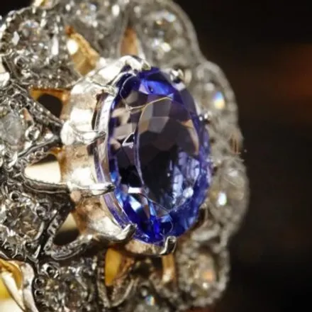
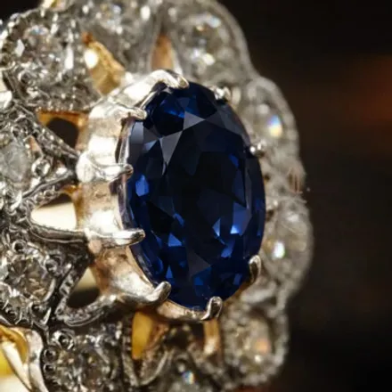
Oprawa i łapki pozostają czytelne, a szlif i obrys kamienia są zachowane. Jednak podejrzany pas starego koloru na krawędzi oraz niemal czarne partie kamienia osłabiają wiarygodność wizualizacji.
phoebe-szafir-granatowy:w4-lagodnabez oceny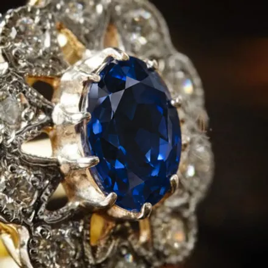
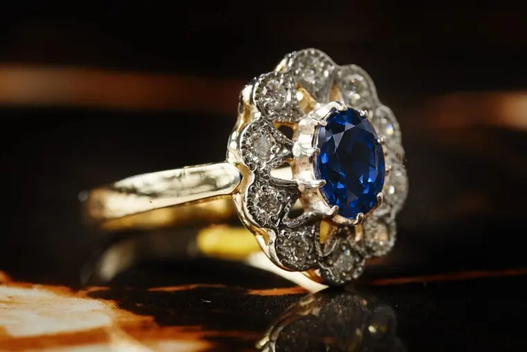
Wersja próby w4 po łagodnej poprawce koloru przy krawędzi (lokalnie, Terra jej nie oceniała). Zarzut źródła: zarzut koloru: „Jednak podejrzany pas starego koloru na krawędzi oraz niemal czarne partie kamienia osłabiają wiarygodność wizualizacji.”
iris-szafir-granatowy-2:w1score 58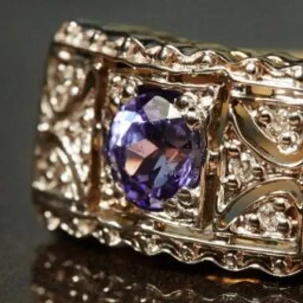
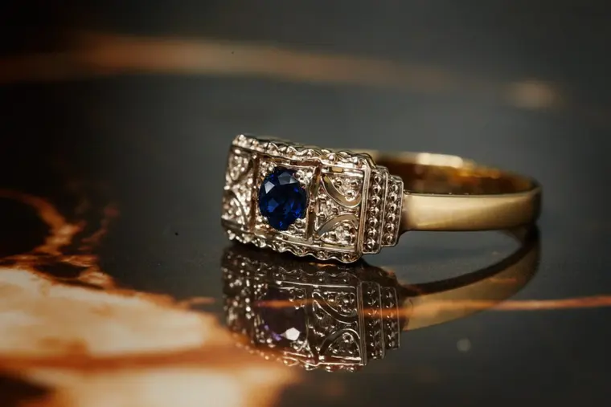
Pierścionek i kadr są zachowane, a kamień nadal ma fasetowany szlif owalny. Retusz jest jednak zbyt bliski czerni, a jego dolna krawędź i styk z oprawą nie są dostatecznie wiarygodne.
iris-szafir-granatowy-2:w3score 58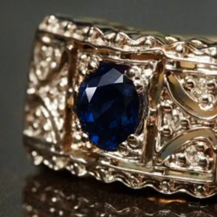
Pierścionek, kadrowanie i ogólny kształt kamienia zostały zachowane, ale niemal czarne partie oraz widoczna granica z oprawą osłabiają wiarygodność wizualizacji.
iris-szmaragd-stonowany:w4score 75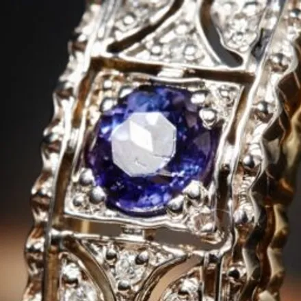
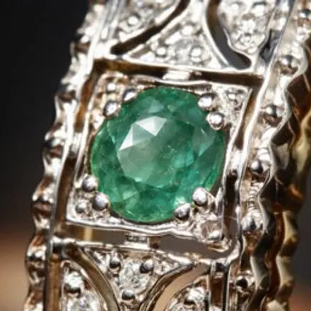
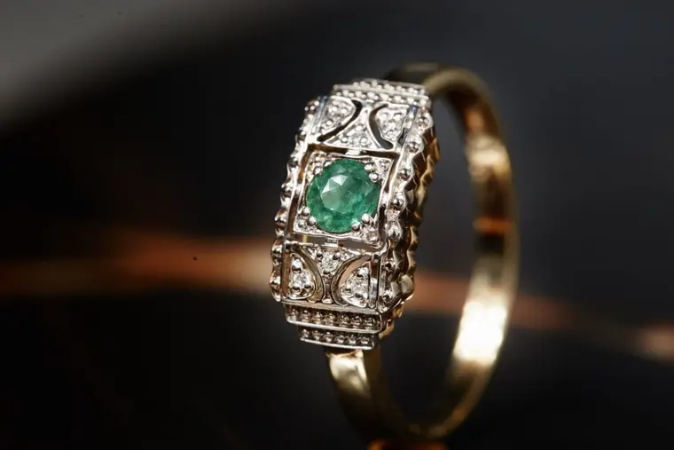
Obrys, rozmiar i położenie kamienia są zbliżone do oryginału, a łapki pozostają widoczne. Ciemna niebieskofioletowa obwódka na dole osłabia jednak wiarygodność styku kamienia z oprawą.
iris-szmaragd-stonowany:w4-lagodnabez ocenyWersja próby w4 po łagodnej poprawce koloru przy krawędzi (lokalnie, Terra jej nie oceniała). Zarzut źródła: zarzut koloru: „Ciemna niebieskofioletowa obwódka na dole osłabia jednak wiarygodność styku kamienia z oprawą.”
iris-szmaragd-stonowany:w4-p5score 72

Kolor jest bliski założeniom, a łapki pozostają widoczne. Jednak bardziej okrągły obrys i miękkie fasety utrudniają potwierdzenie, że zachowano szlif oryginału; kamień nie jest jeszcze dostatecznie wiarygodny do akceptacji.
iris-szmaragd-stonowany-2:w3score 72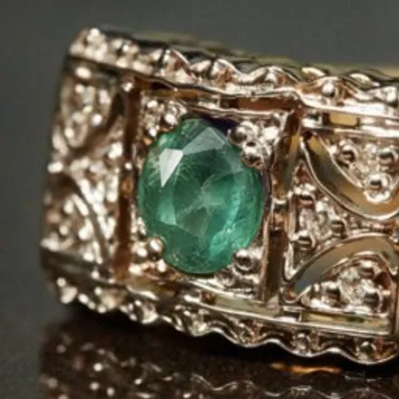
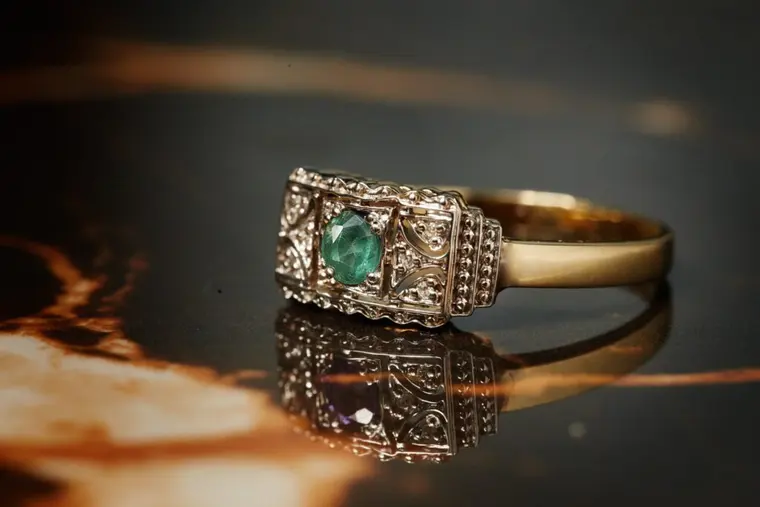
Pierścionek i kadrowanie zostały zachowane, a barwa szmaragdu jest bliska założeniu. Kamień wymaga jednak poprawy na górnym styku z oprawą oraz czytelniejszego odwzorowania faset przed publikacją.
iris-szmaragd-stonowany-2:w2score 67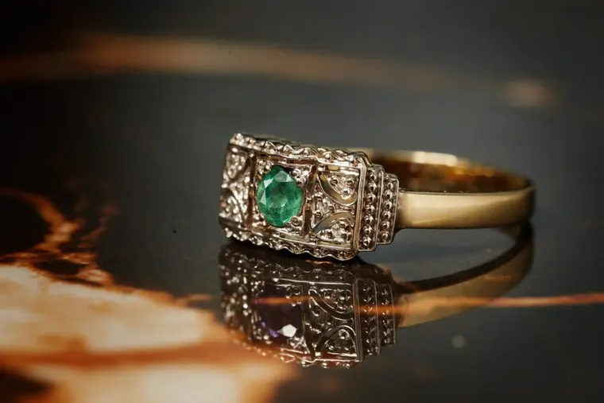
Pierścionek, kadr oraz ogólny owalny szlif i rozmiar kamienia są zachowane, a kolor jest bliski celowi. O jakości wizualizacji przesądzają jednak widoczne resztki fioletu przy krawędzi, nierówny styk z oprawą i miejscami zatarte fasety.
iris-szmaragd-stonowany-2:w2-lagodnabez oceny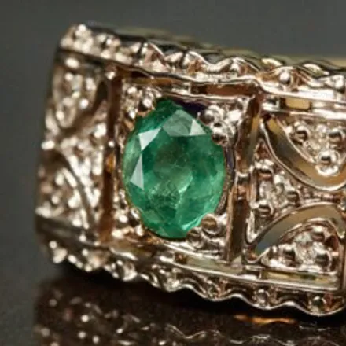
Wersja próby w2 po łagodnej poprawce koloru przy krawędzi (lokalnie, Terra jej nie oceniała). Zarzut źródła: zarzut koloru: „O jakości wizualizacji przesądzają jednak widoczne resztki fioletu przy krawędzi, nierówny styk z oprawą i miejscami zatarte fasety.”
iris-rubin-2:w1score 68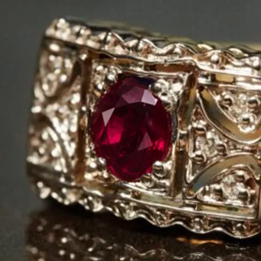
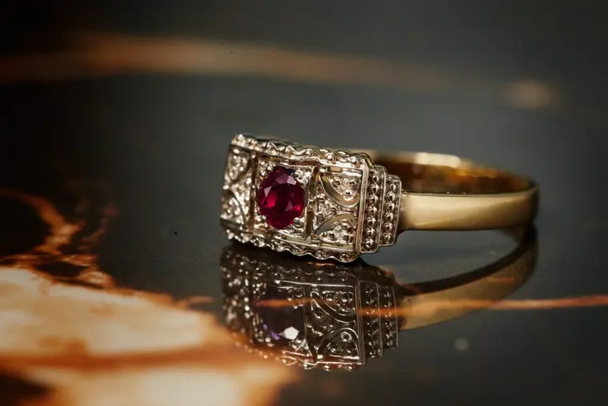
Obrys, rozmiar, położenie i owalny szlif są zasadniczo zachowane, podobnie jak widoczne łapki. Rubin jest jednak zbyt ciemny, a jego krawędź przy oprawie wygląda miejscami nienaturalnie, co obniża wiarygodność wizualizacji.
iris-rubin-2:w1-lagodnabez oceny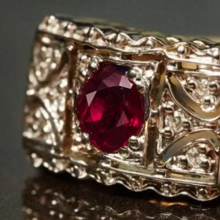
Wersja próby w1 po łagodnej poprawce koloru przy krawędzi (lokalnie, Terra jej nie oceniała). Zarzut źródła: zarzut koloru: „Rubin jest jednak zbyt ciemny, a jego krawędź przy oprawie wygląda miejscami nienaturalnie, co obniża wiarygodność wizualizacji.”
iris-rubin-2:w4score 68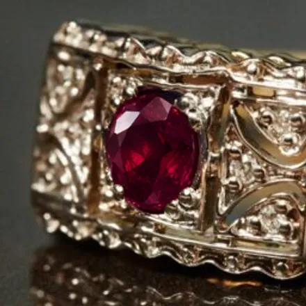
Pierścionek i zasadniczy obrys owalnego kamienia zostały zachowane, a łapki pozostają widoczne. Retusz zdradza jednak ciemny kontur przy styku kamienia z oprawą; kamień jest też na tyle ciemny, że traci część naturalnej głębi i czytelności faset.
ione-szmaragd-stonowany:w2score 74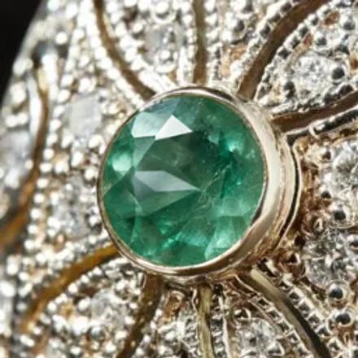
Obrys, rozmiar i położenie kamienia są zgodne z oryginałem, a kolor jest wiarygodny. Rozmycie części faset osłabia jednak wrażenie tego samego szlifu i nie spełnia podanego warunku ostrości.
ione-szmaragd-stonowany:w1score 72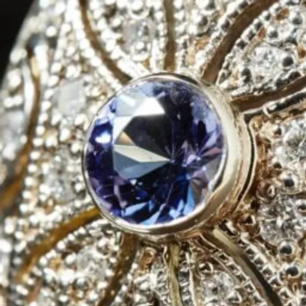


Obrys, wielkość i położenie kamienia odpowiadają oryginałowi, a kolor jest bliski założeniu. Jednak rozmyte fasety i widoczna obwódka przy dolnej krawędzi osłabiają wiarygodność retuszu w zbliżeniu.
ione-szmaragd-stonowany:w1-lagodnabez ocenyWersja próby w1 po łagodnej poprawce koloru przy krawędzi (lokalnie, Terra jej nie oceniała). Zarzut źródła: zarzut koloru: „Jednak rozmyte fasety i widoczna obwódka przy dolnej krawędzi osłabiają wiarygodność retuszu w zbliżeniu.”
ione-szmaragd-stonowany-2:w3-p6score 76Obrys, położenie i ogólny typ szlifu są zachowane, a kolor odpowiada założeniom. Rozmyta struktura dolnej części kamienia osłabia jednak wiarygodność wizualizacji jubilerskiej.
ione-szmaragd-stonowany-2:w3score 72Obrys, rozmiar i położenie okrągłego kamienia są zachowane, a oprawa pozostaje nienaruszona. Kolor jest bliski założeniu, jednak widoczna pozostałość starego koloru przy krawędzi oraz słabo czytelne fasety obniżają wiarygodność wizualizacji.
ione-szmaragd-stonowany-2:w3-lagodnabez ocenyWersja próby w3 po łagodnej poprawce koloru przy krawędzi (lokalnie, Terra jej nie oceniała). Zarzut źródła: zarzut koloru: „Kolor jest bliski założeniu, jednak widoczna pozostałość starego koloru przy krawędzi oraz słabo czytelne fasety obniżają wiarygodność wizualizacji.”
iole-szmaragd-stonowany:w6score 82Szlif, obrys, rozmiar i położenie kamienia są zachowane, a kolor szmaragdu wygląda wiarygodnie. Widoczny różowo-fioletowy ślad przy dolnej lewej krawędzi wymaga jednak poprawy przed publikacją.
iole-szmaragd-stonowany:w6-lagodnabez ocenyWersja próby w6 po łagodnej poprawce koloru przy krawędzi (lokalnie, Terra jej nie oceniała). Zarzut źródła: zarzut koloru: „Widoczny różowo-fioletowy ślad przy dolnej lewej krawędzi wymaga jednak poprawy przed publikacją.”
iole-szmaragd-stonowany:w6-p7score 82Szlif, obrys, rozmiar i położenie kamienia są zachowane, a łapki pozostają widoczne. Kolor szmaragdu jest wiarygodny, jednak różowo-fioletowy ślad przy krawędzi osłabia efekt retuszu i nie spełnia kryterium braku resztek starego koloru.
amphitrite-szafir-granatowy:w6score 75Okrągły szlif, obrys i położenie kamienia są zasadniczo zachowane, a granatowy kolor odpowiada kierunkowi docelowemu. Pozostałość turkusu i niejednolity styk przy dolnej krawędzi osłabiają jednak wiarygodność retuszu.
amphitrite-szafir-granatowy:w5score 74Szlif, wielkość i położenie kamienia wyglądają na zachowane, a łapki pozostają widoczne. Granatowy kolor jest zbliżony do celu, jednak turkusowo-zielona krawędź osłabia wiarygodność wizualizacji.
amphitrite-rubin:w7score 70Zachowano kadr, pierścionek oraz zasadniczy obrys i szlif kamienia, ale zielonkawy odcień przy jego krawędzi i szklisty wygląd czerwonych faset osłabiają wiarygodność wizualizacji rubinu.
amphitrite-rubin:w7-lagodnabez ocenyWersja próby w7 po łagodnej poprawce koloru przy krawędzi (lokalnie, Terra jej nie oceniała). Zarzut źródła: zarzut koloru: „Przy dolnej i prawej krawędzi kamienia, obok łapek, widoczne są ciemne zielonkawo-turkusowe obszary przypominające pozostałość pierwotnej barwy.”
amphitrite-rubin:w3score 68Szlif, obrys, położenie i łapki wyglądają na zachowane, a sam rubin ma wiarygodną barwę. Pozostałości turkusowego koloru przy styku z oprawą osłabiają jednak wiarygodność wizualizacji.
chloris-szafir-granatowy:w1score 68Obrys, położenie i szlif kamienia oraz widoczne łapki odpowiadają oryginałowi, ale sam szafir jest zbyt czarny i sprawia wrażenie cyfrowo wypełnionego. Przez to nie jest dostatecznie wiarygodny jako naturalny kamień na wizualizacji jubilerskiej.
chloris-szafir-granatowy:w2score 68Pierścionek, obrys i typ szlifu zostały zachowane, a łapki pozostają widoczne. Granatowy kamień ma jednak zbyt regularny, płaski wygląd, przez co nie jest wystarczająco wiarygodny jako naturalny szafir na wizualizacji jubilerskiej.
chloris-szmaragd-stonowany-2:w1score 76Obrys, położenie i prostokątny szlif są zachowane, podobnie jak łapki i pozostałe elementy pierścionka. Kamień jest jednak zbyt intensywnie turkusowy, a jego zamglone wnętrze i zielona linia przy dolnej krawędzi osłabiają wiarygodność retuszu.
chloris-szmaragd-stonowany-2:w2score 67Pierścionek i prostokątny szlif stopniowy pozostają rozpoznawalne, a łapki są widoczne. Jednak dolny obrys kamienia nie wygląda na zgodny z oryginałem, a jego barwa i połysk są zbyt szkliste jak na docelową wizualizację naturalnego szmaragdu.
brak kandydata: wszystkie próby (4) odpadły na kontroli automatycznej
brak kandydata: wszystkie próby (4) odpadły na kontroli automatycznej
chryse-szmaragd-stonowany-2:w1score 72Obrys, rozmiar i położenie kamienia są zbliżone do oryginału, a łapki pozostają widoczne. Kolor odpowiada założeniom, ale rozmycie dolnych faset osłabia czytelność szlifu i wiarygodność kamienia w zbliżeniu.
chryse-szmaragd-stonowany-2:w2score 72Obrys, położenie i wielkość kamienia odpowiadają oryginałowi, a łapki pozostają widoczne. Kolor jest odpowiedni, ale rozmyte fasety i pasy osłabiają wiarygodność kamienia w zbliżeniu.
brak kandydata: wszystkie próby (4) odpadły na kontroli automatycznej
brak kandydata: wszystkie próby (4) odpadły na kontroli automatycznej
brak kandydata: wszystkie próby (4) odpadły na kontroli automatycznej
brak kandydata: wszystkie próby (4) odpadły na kontroli automatycznej
harmonia-szmaragd-stonowany-2:w1score 67Kolor jest bliski założeniu, a wielkość i położenie kamienia są zasadniczo zgodne z oryginałem. Łapki pozostają widoczne, ale rozmyte wnętrze i słabo czytelny szlif obniżają wiarygodność wizualizacji.
harmonia-szmaragd-stonowany-2:w2score 65Pierścionek, obrys i położenie kamienia są zachowane, a łapki pozostają widoczne. Sam kamień nie jest jednak dostatecznie wiarygodny: intensywna zieleń, ziarnista tekstura i miejscami nieostre fasety nadają mu wygląd retuszu.
brak kandydata: wszystkie próby (4) odpadły na kontroli automatycznej
thalia-szmaragd-stonowany:w3score 65Pierścionek i prostokątny charakter szlifu są zachowane, ale kamień nie wygląda jeszcze dostatecznie wiarygodnie: jego zieleń jest zbyt jednolita, fasety są miejscami miękkie, a przy prawej łapce widać niebieski obszar mogący być pozostałością starego koloru.
thalia-szmaragd-stonowany:w2score 57Kolor jest bliski założeniu, a reszta zdjęcia pozostaje zachowana, ale zmieniony obrys kamienia i widoczna stara barwa przy krawędzi obniżają wiarygodność wizualizacji.
thalia-szmaragd-stonowany-2:w2score 72Obrys, rozmiar i położenie kamienia odpowiadają oryginałowi, a łapki pozostają widoczne. Nie widać wyraźnej poświaty ani resztek niebieskiego koloru na krawędzi. Kamień wymaga jednak spokojniejszej zieleni i wyraźniejszych faset, aby spełnić założenia wizualizacji.
thalia-szmaragd-stonowany-2:w1score 62Obrys, rozmiar i położenie kamienia są zbliżone do oryginału, a pierścionek i łapki pozostają zachowane. Jednak mętna tekstura osłabia czytelność okrągłego szlifu fasetowego, przez co kamień nie jest dostatecznie wiarygodny nawet jako wizualizacja.
thalia-rubin:w2score 65Pierścionek, kadr i zasadniczy obrys kamienia zostały zachowane, ale pozostałość niebieskiego koloru przy jego krawędzi oraz mało naturalne przejście przy prawej łapce obniżają wiarygodność wizualizacji.